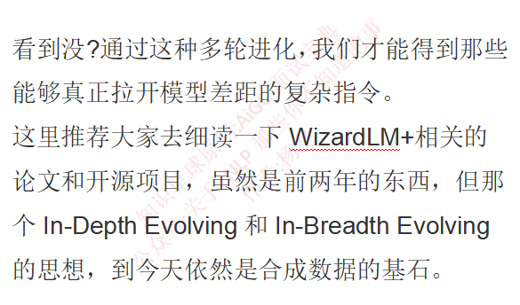
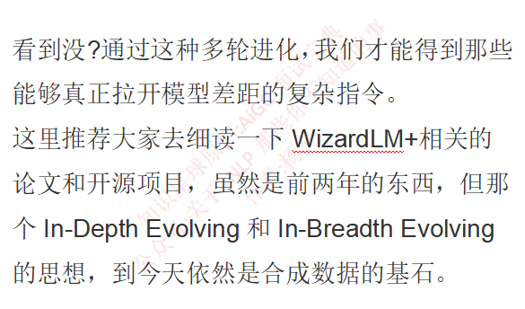

面试官：模型如何在指令微调过程中构造或筛选高质量数据？
大模型如何在指令微调过程中构造或筛选高质量数据？
- 一、数据的来源与构造
- 1.1 合成数据的高端玩法：不仅仅是Prompt Engineering
- 1.2 真实场景下的案例
- 二、 数据的筛选–这才是见真功夫的地方
- 2.1 语义去重：MinHash和Embedding大法
- 2.2 基于模型打分的质量过滤（LLM-as-a-Judge）
- 2.3 难度与复杂度的量化：IFD指标
- 2.4 毒性与偏见过滤
- 三、 推理数据的崛起
- 四、 人的作用 Human-in-the-Loop的最后一公里
- 五、 那些必须要避的坑（血泪经验）
- 5.1 别忽视Prompt Template的影响
- 5.2 数据分布的配比是一门玄学
- 5.3 拒绝测试集污染


 
